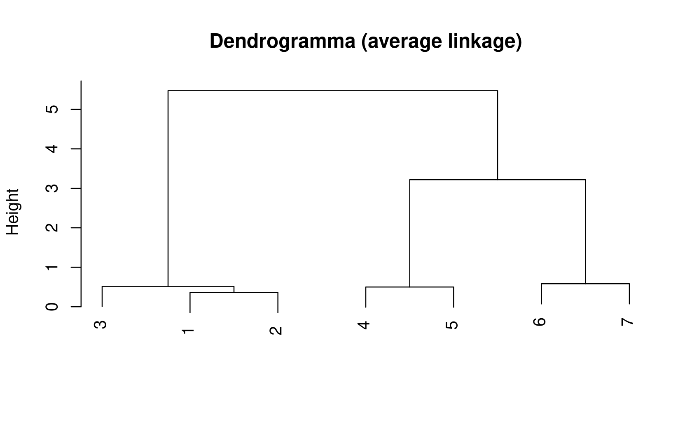
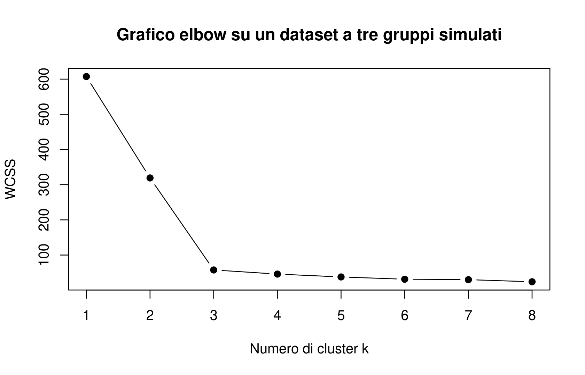
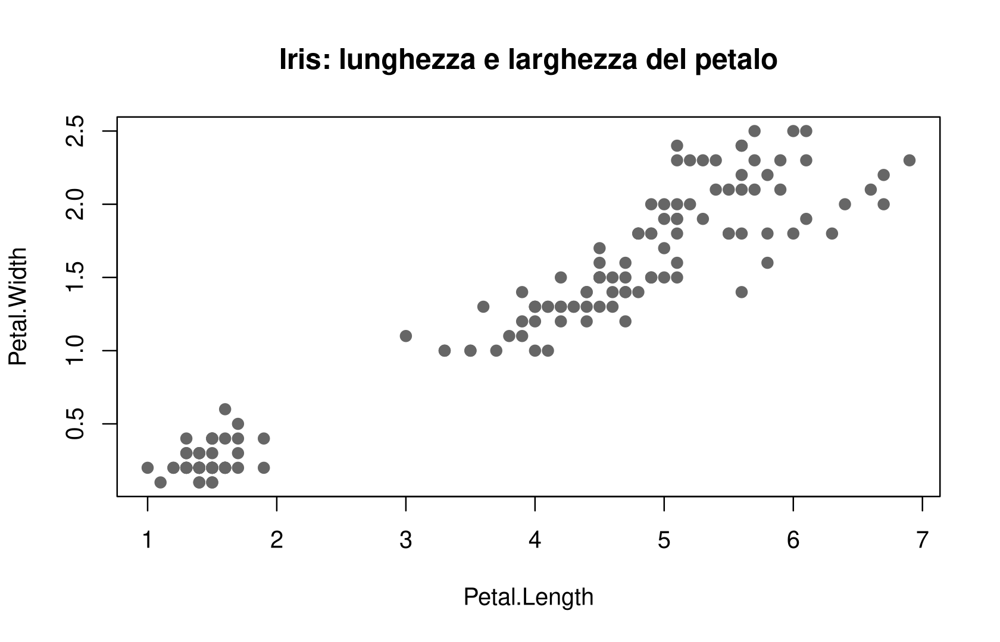
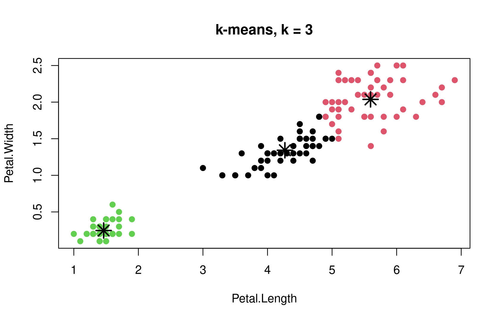
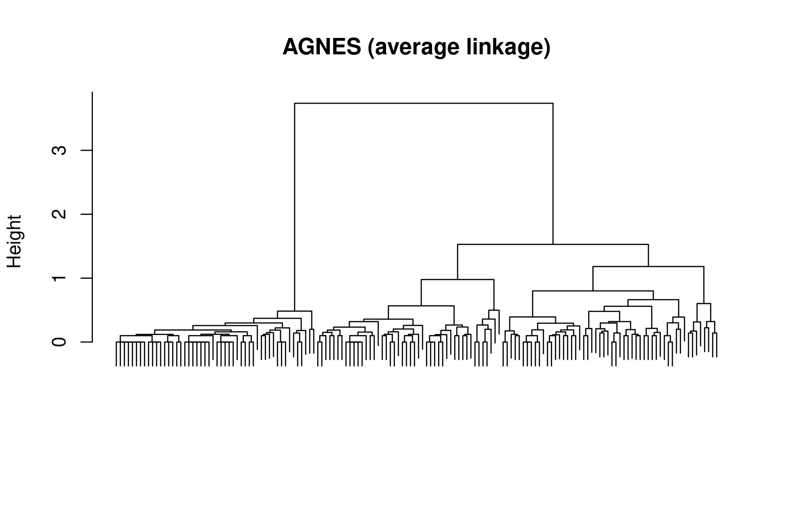
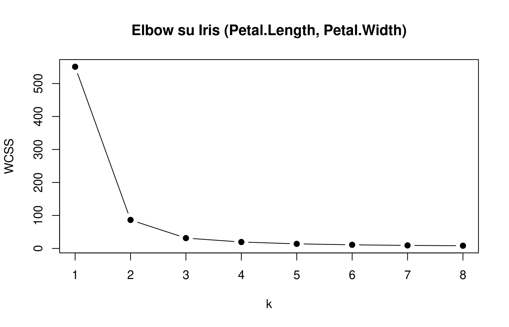

punti <- data.frame(
x = c(0, 1, -1, 0.5, 4, 4.5),
y = c(0, 0.3, -0.2, -0.4, 3, 3.2)
)
punti x y
1 0.0 0.0
2 1.0 0.3
3 -1.0 -0.2
4 0.5 -0.4
5 4.0 3.0
6 4.5 3.2Al termine del capitolo dovresti essere in grado di:
Il clustering è il primo argomento del corso in cui i dati sono davvero multivariati e in cui, per la prima volta, non abbiamo alcuna “risposta giusta” da confrontare con il risultato del metodo. Per questo motivo è anche il primo argomento in cui l’atteggiamento critico verso l’output — più che la sola capacità di eseguire un algoritmo — diventa la competenza centrale.
Nel capitolo precedente abbiamo visto la media come il minimizzatore di un rischio empirico quadratico: dato un campione \(\{x_i\}_{i=1}^n\), la media \(\bar x\) è il valore \(m\) che minimizza \(\sum_i (x_i-m)^2\). La stessa idea si estende senza difficoltà a osservazioni multivariate \(x_i\in\mathbb R^d\): la media si calcola componente per componente, e continua a minimizzare la somma dei quadrati delle distanze euclidee.
C’è però una situazione in cui questa costruzione comincia a scricchiolare. Immagina di estrarre ripetutamente palline da un’urna e di contare quante sono rosse: le tue osservazioni sono numeri interi (0, 1, 2, 3, …). Se calcoli la media di queste osservazioni puoi tranquillamente ottenere \(4{,}5\). Il problema è che \(4{,}5\) palline rosse non è un’osservazione possibile: la media, in generale, non è uno dei valori che abbiamo effettivamente osservato. In una dimensione questo inconveniente si risolve spesso passando alla mediana, che (per costruzione, quando \(n\) è dispari) coincide con un’osservazione reale. In più dimensioni, o quando alcune variabili sono categoriche, la mediana componente per componente perde senso, e serve un’idea diversa: forzare il “centro” a essere una delle osservazioni. Questa idea è il medoide.
Riprendiamo il rischio quadratico della media, ma restringiamo l’insieme su cui minimizziamo.
Dato un campione multivariato \(\{x_i\}_{i=1}^n\), con \(x_i\in\mathbb R^d\), il centroide (o media) è \[ \bar x := \frac1n \sum_{i=1}^n x_i \in \operatorname*{argmin}_{m\,\in\,\mathbb R^d} \sum_{i=1}^n \|x_i - m\|^2, \] cioè il minimizzatore del rischio quadratico calcolato su tutto lo spazio \(\mathbb R^d\).
Il medoide è invece definito come il minimizzatore dello stesso rischio, ma ristretto alle sole osservazioni: \[ x^* \in \operatorname*{argmin}_{h\,\in\,\{x_1,\ldots,x_n\}} \sum_{i=1}^n \|h - x_i\|^2. \]
Più in generale, sostituendo la distanza euclidea al quadrato con una funzione di costo qualsiasi \(\ell(x,h)\), si definisce il medoide rispetto a \(\ell\) come \[ x^* \in \operatorname*{argmin}_{h\,\in\,\{x_1,\ldots,x_n\}} \sum_{i=1}^n \ell(x_i, h). \]
Il centroide e il medoide risolvono lo stesso problema di minimo, con un unico vincolo aggiuntivo per il secondo: il candidato \(h\) deve appartenere all’insieme finito delle osservazioni. È esattamente la relazione che già conosci tra media e mediana, generalizzata al caso multivariato e a costi arbitrari.
Restringere la ricerca del minimo a un insieme finito ha una conseguenza pratica immediata: non esiste una formula chiusa per il medoide, così come non esiste per la mediana in più di una dimensione. Questo non deve sorprendere né spaventare: significa solo che, per trovare il medoide, in generale bisogna confrontare esplicitamente il valore del rischio in corrispondenza di ciascuna osservazione candidata, invece di applicare una formula come \(\frac1n\sum_i x_i\).
C’è un modo visivo efficace per capire quando centroide e medoide coincidono (a meno di arrotondamenti) e quando invece si allontanano molto. Se tra le osservazioni esiste un punto che si trova realmente “in mezzo” alla nuvola di dati, quel punto tenderà a essere sia vicino al centroide sia il medoide: la restrizione all’insieme delle osservazioni non costa quasi nulla. Se invece nessuna osservazione occupa una posizione realmente centrale — per esempio perché i dati si dispongono su due gruppetti ben separati senza nulla nel mezzo — il medoide è costretto a “cadere” su uno dei punti periferici di uno dei due gruppetti, pur di rimanere un’osservazione reale. Il centroide, in quel caso, può trovarsi in una zona dello spazio dove non c’è alcun dato osservato: geometricamente ragionevole come “punto medio”, ma statisticamente vuoto, perché nessuno degli individui osservati si trova lì.
Nella scelta del medoide, il candidato \(h\) è un esempio di parametro: qualcosa che viene ottimizzato direttamente all’interno dello stesso passo di minimizzazione. Più avanti nel capitolo incontreremo invece il numero di cluster \(k\), che è un iperparametro: una quantità che va decisa in un passo diverso (spesso successivo), per cui non esiste un unico criterio universalmente valido. La distinzione tra parametro e iperparametro tornerà più volte nel corso, ogni volta che un metodo statistico avrà una parte “ottimizzabile direttamente dai dati” e una parte che richiede invece una scelta esterna.
Consideriamo sei osservazioni bivariate molto semplici, quattro raccolte “in basso” e due “in alto”, pensando a un dataset giocattolo simile alla demo interattiva usata a lezione.
punti <- data.frame(
x = c(0, 1, -1, 0.5, 4, 4.5),
y = c(0, 0.3, -0.2, -0.4, 3, 3.2)
)
punti x y
1 0.0 0.0
2 1.0 0.3
3 -1.0 -0.2
4 0.5 -0.4
5 4.0 3.0
6 4.5 3.2Calcoliamo il centroide componente per componente, e poi cerchiamo il medoide confrontando, per ciascuna osservazione candidata, la somma dei quadrati delle distanze da tutte le altre.
centroide <- colMeans(punti)
centroide x y
1.5000000 0.9833333 dist_quadrate <- as.matrix(dist(punti))^2
rischio_per_candidato <- rowSums(dist_quadrate)
rischio_per_candidato 1 2 3 4 5 6
58.03 43.03 84.63 56.21 100.63 122.21 medoide <- punti[which.min(rischio_per_candidato), ]
medoide x y
2 1 0.3rischio_per_candidato contiene, per ciascuna osservazione, il valore del rischio \(\sum_i \|h-x_i\|^2\) se scegliessimo quell’osservazione come “centro”. Il medoide è semplicemente l’osservazione con il valore più basso. Nota che non abbiamo implementato un algoritmo di ottimizzazione: abbiamo solo valutato la definizione su tutte le alternative possibili, cosa che qui è fattibile perché le osservazioni sono poche.
Prima di guardare l’output: aspettandoti che il centroide cada “a metà strada” tra i due gruppetti di punti, quale pensi sarà il medoide? Uno dei quattro punti in basso, uno dei due in alto, o non è possibile prevederlo?
Il centroide di questo dataset cade in una zona dello spazio compresa tra i due gruppetti, in un punto dove non c’è nessuna osservazione reale: è un compromesso geometrico, non un individuo effettivamente osservato. Il medoide, invece, è vincolato a essere uno dei sei punti: risulterà quindi uno dei punti del gruppo più numeroso (quello “in basso”), semplicemente perché stare vicino a tre vicini pesa più, nella somma delle distanze quadratiche, che stare vicino a due. Questo è già un piccolo indizio di un comportamento che ritroveremo nel clustering: il medoide “sceglie un rappresentante reale”, ma quel rappresentante non è necessariamente equidistante da tutti i punti come vorrebbe essere un ipotetico centro geometrico.
La distinzione centroide/medoide è a volte sottile e viene talvolta trascurata nella pratica. Ma nel momento in cui una variabile è categorica, o in cui la media di osservazioni discrete produce valori privi di senso (come \(4{,}5\) palline rosse, o un “cliente medio” con \(2{,}3\) figli), il centroide smette di essere interpretabile come individuo reale, mentre il medoide resta sempre un’osservazione autentica. Questa differenza sarà il punto di partenza per capire perché esistono due famiglie di metodi di clustering non gerarchico: \(k\)-means (basato sui centroidi) e PAM (basato sui medoidi).
Immagina un biologo che raccoglie decine di misure morfologiche (lunghezza, peso, forma del becco, …) su un gruppo di animali, senza sapere in anticipo quante specie diverse sta osservando. Oppure immagina un’azienda che raccoglie dati sul comportamento d’acquisto dei propri clienti e vuole capire se esistono gruppi di clienti con esigenze simili, per poter costruire strategie di marketing differenziate. In entrambi i casi il problema è lo stesso: partizionare un insieme di osservazioni in gruppi internamente omogenei, senza che nessuno ci dica in anticipo quali sono i gruppi “giusti”.
Questo è il problema del clustering: una tecnica non supervisionata, nel senso preciso che non esiste, nei dati, un’etichetta osservata da riprodurre. È bene tenere a mente fin da subito questo aspetto: il clustering è per sua natura una tecnica esplorativa. Non esiste una “risposta corretta” con cui confrontare il risultato, a differenza di quanto accadrà quando affronteremo la classificazione (nel capitolo su K-Nearest Neighbors), dove ogni osservazione ha davvero un’etichetta di classe nota e il compito del metodo è impararla.
Formalmente, dato un campione \(\{x_i\}_{i=1,\ldots,n}\), l’obiettivo del clustering è trovare \(k\) gruppi disgiunti (cluster) \((C_j)_{j=1,\ldots,k}\) tali che \[ \{x_i\}_{i=1,\ldots,n} = \bigcup_{j=1}^k C_j, \qquad C_i \cap C_j = \varnothing \text{ per } i\neq j, \] minimizzando la variabilità interna a ciascun gruppo: vogliamo che, all’interno di uno stesso cluster, le osservazioni si assomiglino il più possibile, mentre osservazioni in cluster diversi possono essere anche molto diverse tra loro.
Il caso limite \(k=n\), in cui ogni osservazione forma un cluster a sé — “ogni individuo nella sua isoletta felice” — rende banalmente nulla la variabilità interna, ma è ovviamente inutile: serve un criterio ragionevole per scegliere \(k\).
Dietro la definizione, apparentemente semplice, si nascondono tre problemi distinti, ed è utile tenerli separati fin da subito:
Il clustering è inoltre concettualmente propedeutico alla classificazione, che affronteremo più avanti: una volta costruiti dei cluster su un insieme di dati, ci si può chiedere a quale cluster andrebbe assegnata una nuova osservazione non ancora vista. Questo problema — chiamato spesso imputation — è essenzialmente un problema di classificazione supervisionata, con la differenza che qui le “classi” sono i cluster che abbiamo appena costruito, e non etichette date a priori.
Prima di entrare nei dettagli, conviene avere una mappa dei metodi che affronteremo. Si dividono in due grandi famiglie.
I metodi non gerarchici fissano \(k\) prima di calcolare i cluster: si sceglie il numero di gruppi desiderato, e l’algoritmo restituisce una singola partizione con esattamente \(k\) cluster. In questa famiglia rientrano \(k\)-means, basato sui centroidi, e PAM (Partitioning Around Medoids), basato sui medoidi.
I metodi gerarchici (Hierarchical Cluster Analysis, HCA) non richiedono di fissare \(k\) in anticipo: costruiscono un’intera gerarchia di partizioni annidate, dalla situazione con un solo cluster fino a quella con \(n\) cluster singoli (o viceversa), e permettono di “tagliare” questa gerarchia al livello desiderato solo alla fine. Si dividono a loro volta in agglomerativi (bottom-up, es. AGNES), che partono dai singoli punti e li fondono progressivamente, e divisivi (top-down, es. DIANA), che partono da un unico cluster e lo suddividono progressivamente.
Il vantaggio principale dei metodi gerarchici è proprio questa flessibilità: si esegue l’algoritmo una sola volta e si dispone, a quel punto, di tutte le partizioni possibili in \(k=1,\ldots,n\) cluster, tra cui scegliere in un secondo momento. Il costo è che, in generale, questi metodi sono più lenti dei metodi non gerarchici, perché devono costruire l’intera gerarchia anche se poi si è interessati a un solo valore di \(k\).
Tratteremo prima i due metodi non gerarchici (\(k\)-means e PAM), poi i due metodi gerarchici (AGNES e DIANA), e infine i criteri con cui scegliere \(k\) (che si applicano, con qualche adattamento, a entrambe le famiglie). Questa lezione è dichiaratamente teorica: nessuna delle funzioni R (kmeans, pam, hclust, agnes, diana) compare nelle slide originali. Le trovi comunque già usate nel corso del capitolo, e sistematicamente nel Laboratorio R finale, in modo da collegare da subito la teoria alla pratica.
\(k\)-means è il metodo di clustering più semplice e, non a caso, il primo che vale la pena provare su un nuovo dataset. L’idea riprende direttamente il centroide: invece di cercare un solo centro per l’intero campione, cerchiamo \(k\) centri, uno per ciascun cluster, e assegniamo ogni osservazione al centro più vicino.
Dati \(k\) cluster \((C_j)_{j=1}^k\), il rischio empirico da minimizzare è la Within Clusters Sum of Squares (WCSS), detta anche inerzia: \[ \operatorname{WCSS}\big((C_j)_{j=1}^k\big) = \sum_{j=1}^k \sum_{x_i \in C_j} \|x_i - c_j\|^2, \qquad c_j := \frac{1}{\#C_j} \sum_{x_i \in C_j} x_i, \] dove \(c_j\) è il centroide del cluster \(C_j\). \(k\)-means cerca la partizione \((C_j)_{j=1}^k\) che minimizza questo rischio.
Si tratta della stessa loss quadratica del centroide, solo applicata separatamente a ciascun gruppo: se ci fosse un solo cluster contenente tutte le osservazioni, il problema si ridurrebbe esattamente al calcolo della media che già conosciamo dal capitolo precedente.
Trovare la partizione che minimizza esattamente la WCSS è un problema NP-hard: al crescere di \(n\) e \(k\), il numero di partizioni possibili è enorme, e non esiste un algoritmo efficiente che garantisca il minimo globale. Si osserva però una condizione di ottimalità molto naturale: in un ottimo (anche solo locale), ogni osservazione deve essere assegnata al centroide più vicino, altrimenti basterebbe riassegnarla per abbassare ulteriormente la WCSS.
Questa osservazione suggerisce un algoritmo iterativo — attribuito a Lloyd — che alterna due passi:
Una volta fissati i centri, il passo di assegnazione partiziona lo spazio in regioni geometriche note come celle di Voronoi: la cella del centro \(c_j\) è l’insieme dei punti dello spazio più vicini a \(c_j\) che a qualunque altro centro. È un’immagine utile da tenere a mente: \(k\)-means, in ogni sua iterazione, non fa altro che tracciare (implicitamente) queste celle e spostare i centri verso il baricentro dei punti che ricadono in ciascuna cella.
L’algoritmo di Lloyd, così come descritto, parte da centroidi scelti a caso. Esistono strategie di inizializzazione più sofisticate (la più nota è nota come k-means++) che scelgono i centroidi iniziali in modo da favorire punti già ben distanziati tra loro, riducendo il rischio di convergere a soluzioni chiaramente subottimali. Torneremo su questo aspetto — e sull’effetto pratico di inizializzazioni diverse sullo stesso dataset — quando useremo kmeans() su dati reali.
Prima di calcolare, prova a rispondere: se un dataset è composto da due nuvole di punti ben separate, quanto pensi che il risultato di \(k\)-means con \(k=2\) dipenda dall’inizializzazione casuale dei centroidi? Molto, poco, per niente?
set.seed(1)
gruppo_a <- data.frame(x = rnorm(15, mean = 0, sd = 0.5), y = rnorm(15, mean = 0, sd = 0.5))
gruppo_b <- data.frame(x = rnorm(15, mean = 4, sd = 0.5), y = rnorm(15, mean = 4, sd = 0.5))
dati_semplici <- rbind(gruppo_a, gruppo_b)
km_semplice <- kmeans(dati_semplici, centers = 2, nstart = 1)
km_semplice$centers x y
1 0.05042142 0.03203675
2 4.04514292 4.08763166km_semplice$tot.withinss[1] 10.76131Dopo il calcolo: i due centroidi trovati corrispondono, più o meno, ai centri delle due nuvole simulate (\((0,0)\) e \((4,4)\))? Se il dataset è ben separato in due gruppi evidenti, l’algoritmo trova la soluzione corretta quasi indipendentemente dall’inizializzazione: il problema dell’inizializzazione diventa serio soprattutto quando i gruppi si sovrappongono o quando \(k\) non corrisponde alla struttura reale dei dati — un esperimento che approfondiremo nel prossimo capitolo.
\(k\)-means ha tre vantaggi pratici importanti: è concettualmente semplice, è veloce anche su dataset di grandi dimensioni (ogni iterazione richiede solo calcoli di distanze e medie), e si aggiorna facilmente quando arrivano nuove osservazioni, perché l’algoritmo è già iterativo per costruzione — non serve ripartire da zero, basta continuare le iterazioni includendo i nuovi punti.
\(k\)-means eredita esattamente gli stessi difetti della media: essendo basato sulla loss quadratica, è molto sensibile agli outlier. Un singolo punto molto lontano dagli altri può spostare significativamente un centroide, “trascinando” con sé l’intero cluster. A questo si aggiungono altri tre limiti:
Una domanda naturale, di fronte alla sensibilità agli outlier, è: perché non usare la mediana al posto della media, cioè un ipotetico “\(k\)-medians”? La risposta pratica è che, se si è disposti a rinunciare alla comodità computazionale della media, tanto vale spingersi fino in fondo e usare direttamente i medoidi — il metodo che vediamo ora.
Torniamo all’esempio della ricchezza, questa volta su scala di popolazione. Immagina un piccolo paese in cui la maggior parte delle famiglie ha un reddito modesto, ma una singola famiglia possiede una fortuna miliardaria.
Prima di calcolare: se aggiungiamo un singolo miliardario a un gruppo di famiglie “normali”, ti aspetti che la ricchezza media del gruppo cambi molto o poco? E la ricchezza mediana?
redditi <- c(28, 31, 25, 33, 29, 27, 30, 26, 32, 28) # in migliaia di euro
redditi_con_miliardario <- c(redditi, 5000000)
mean(redditi)[1] 28.9mean(redditi_con_miliardario)[1] 454571.7median(redditi)[1] 28.5median(redditi_con_miliardario)[1] 29Dopo il calcolo: la media si è spostata da una ventina di migliaia di euro a diverse centinaia di migliaia — sembrerebbe che “in media” tutti si siano arricchiti, il che è chiaramente fuorviante. La mediana, invece, resta stabile: continua a descrivere correttamente il livello di reddito della famiglia “tipica”. Questo è precisamente il motivo per cui, quando il centroide (la media) può essere pesantemente distorto da poche osservazioni estreme, conviene sostituirlo con il medoide, che — essendo vincolato a essere un’osservazione reale — è molto più simile, nel comportamento, alla mediana.
PAM generalizza \(k\)-means in due direzioni contemporaneamente: sostituisce il centroide con il medoide, e permette di sostituire la distanza euclidea al quadrato con una funzione di costo \(\ell\) arbitraria. Il rischio da minimizzare è la Within Clusters Risk (WCR): \[ \operatorname{WCR}\big((C_j)_{j=1}^k\big) = \sum_{j=1}^k \sum_{x_i \in C_j} \ell(x_i, c_j), \] dove \(c_j\) è ora il medoide del cluster \(C_j\), e \(\ell(x,h)\) è una funzione di costo scelta dall’utente (spesso, ma non necessariamente, una distanza).
L’algoritmo che minimizza (approssimativamente) la WCR ha la stessa struttura concettuale dell’algoritmo di Lloyd — assegnazione, aggiornamento, ripeti — ma con una complicazione: mentre trovare il centroide di un gruppo di punti è immediato (basta fare la media), trovare il medoide di un gruppo richiede di confrontare il rischio associato a ogni possibile osservazione candidata. Per questo motivo, gli algoritmi che implementano PAM sono generalmente più lenti di quelli per \(k\)-means, pur risolvendo un problema concettualmente molto simile.
Il vantaggio di questa maggiore complessità computazionale è una flessibilità molto maggiore. Il costo \(\ell\) non deve essere per forza una distanza euclidea: può essere una qualunque funzione che quantifichi la dissimilarità tra due osservazioni, incluse variabili categoriche. Questo apre la porta a dataset con variabili miste (alcune numeriche, altre categoriche): per queste ultime si possono usare costi basati sulla moda invece che sulla media, ottenendo così una combinazione di criteri (per esempio moda per le variabili categoriche e mediana o media per quelle numeriche). Il caso estremo in cui tutte le variabili sono categoriche prende il nome di \(k\)-modes, una variante di PAM pensata apposta per questo scenario.
Consideriamo un piccolo dataset di clienti di un negozio online, descritti da due variabili: la spesa media annua (in euro) e la frequenza di acquisto (numero di ordini all’anno). La maggior parte dei clienti forma due gruppi ragionevoli — clienti occasionali e clienti abituali — ma un singolo cliente è in realtà un grande acquirente aziendale, con una spesa annua molto più alta di chiunque altro.
set.seed(42)
occasionali <- data.frame(spesa = rnorm(20, 150, 30), ordini = rnorm(20, 3, 1))
abituali <- data.frame(spesa = rnorm(20, 500, 40), ordini = rnorm(20, 12, 2))
outlier_aziendale <- data.frame(spesa = 9000, ordini = 40)
clienti <- rbind(occasionali, abituali, outlier_aziendale)Prima di calcolare: pensi che l’aggiunta del singolo cliente aziendale modificherà di più il risultato di \(k\)-means o quello di PAM, entrambi calcolati con \(k=2\)?
library(cluster)
km_clienti <- kmeans(clienti, centers = 2, nstart = 10)
pam_clienti <- pam(clienti, k = 2)
km_clienti$centers spesa ordini
1 327.8606 7.525105
2 9000.0000 40.000000pam_clienti$medoids spesa ordini
[1,] 218.5994 3.704837
[2,] 9000.0000 40.000000table(kmeans = km_clienti$cluster, pam = pam_clienti$clustering) pam
kmeans 1 2
1 40 0
2 0 1Guarda i centri prodotti da kmeans: uno dei due centroidi viene attirato verso il cliente aziendale, spostandosi lontano dal centro reale del gruppo di clienti abituali. I medoidi di PAM restano invece due clienti “tipici” e realistici, uno per ciascun segmento comportamentale. La tabella di confronto mostra tipicamente che il cliente aziendale finisce isolato o forza una ripartizione diversa in \(k\)-means, mentre PAM tende a preservare la struttura dei due segmenti originali, relegando l’outlier come caso a parte all’interno di uno dei due gruppi.
Questo esempio illustra bene perché PAM è spesso preferito a \(k\)-means quando si sospetta la presenza di osservazioni anomale: la scelta del medoide (o, più in generale, di un costo diverso dal quadrato) rende l’algoritmo meno sensibile a singole osservazioni estreme, esattamente come la mediana lo è rispetto alla media.
La maggiore robustezza e flessibilità di PAM ha un costo: gli algoritmi che lo implementano sono generalmente più lenti di \(k\)-means, perché a ogni passo devono cercare il medoide ottimale confrontando le osservazioni candidate, invece di calcolare una semplice media. Anche PAM, come \(k\)-means, soffre della curse of dimensionality quando si usano distanze come costo, per lo stesso motivo discusso sopra.
Un consiglio pratico, utile soprattutto in fase esplorativa: se il dataset è molto grande (centinaia di migliaia o milioni di osservazioni), evita di far girare direttamente PAM sull’intero dataset. Estrai prima un sottocampione casuale ragionevole, esplora la struttura su quello, e solo in un secondo momento — se necessario — valuta come estendere l’analisi all’intero dataset.
I metodi non gerarchici richiedono di fissare \(k\) prima ancora di vedere il risultato. Ma se non abbiamo alcuna idea di quale \(k\) sia ragionevole, sarebbe comodo poter esplorare più valori di \(k\) senza dover rieseguire l’intero algoritmo ogni volta. È esattamente ciò che offrono i metodi gerarchici: costruiscono, con un’unica esecuzione, un’intera famiglia di partizioni annidate, lasciando la scelta di \(k\) per un momento successivo.
Il risultato di un metodo gerarchico si rappresenta con un dendrogramma, un grafo ad albero in cui le foglie corrispondono alle singole osservazioni. I punti di fusione (o di divisione) mostrano a quale altezza — una misura di distanza o dissimilarità — due cluster vengono uniti (o separati): più in alto avviene l’unione, più i due cluster sono dissimili tra loro.
Sull’asse orizzontale trovi le osservazioni (o i cluster), organizzate in modo che le fusioni si possano disegnare senza incroci; sull’asse verticale trovi l’altezza, cioè la dissimilarità alla quale un certo gruppo si è formato. Se noti che alcune fusioni avvengono a un’altezza molto bassa (rami “corti”), quelle osservazioni sono molto simili tra loro; fusioni che avvengono molto più in alto indicano invece che si stanno unendo gruppi già piuttosto eterogenei al loro interno.
Per ottenere una partizione con un numero specifico di cluster \(k\), si effettua un taglio orizzontale del dendrogramma: il numero di rami intersecati dal taglio è il numero di cluster ottenuti. In R questo si fa con il comando cutree(), specificando direttamente \(k\) (non l’altezza del taglio, anche se in linea di principio si potrebbe tagliare a un’altezza specifica).
AGNES (“AGglomerative NESting”) parte da \(n\) cluster, uno per ciascuna osservazione, e a ogni passo fonde i due cluster più simili, secondo un criterio di collegamento (linkage). L’algoritmo, in sintesi: (1) calcola la matrice delle distanze tra tutti i cluster correnti; (2) unisce i due cluster più vicini; (3) aggiorna la matrice delle distanze; (4) ripete fino a ottenere un unico cluster con tutte le osservazioni.
Il punto delicato è decidere cosa significhi “distanza tra due cluster”, dato che ormai non stiamo più confrontando singole osservazioni ma insiemi di osservazioni. I tre criteri più comuni sono:
Il single linkage ha un’interpretazione intuitiva particolarmente vivida: pensa a due cluster come a due isole, la Sicilia e la Calabria, che vuoi collegare con un ponte. Costruirai il ponte nel punto in cui le due coste sono più vicine, indipendentemente da quanto siano grandi o estese le due isole nel resto della loro superficie. Questo è esattamente ciò che fa il minimum linkage: basta una singola coppia di punti particolarmente vicini, uno in ciascun cluster, per far sembrare i due cluster “vicini” nel loro complesso, anche se il resto delle osservazioni nei due gruppi è molto distante. Questo rende il single linkage sensibile a coppie di punti vicine per puro caso, e produce talvolta un effetto “a catena”, in cui cluster molto allungati si formano collegando punti via via più lontani lungo una sequenza.
Il complete linkage ha il difetto opposto e simmetrico: guardando solo la coppia di punti più lontana, basta un singolo outlier in uno dei due cluster per farli sembrare molto dissimili, anche se la maggior parte delle osservazioni nei due gruppi sono in realtà vicine. L’average linkage è il compromesso più utilizzato nella pratica — è, di fatto, l’opzione predefinita nella maggior parte delle implementazioni software — proprio perché non dipende da un singolo valore estremo (né il minimo né il massimo), ma da una media su tutte le coppie possibili.
Se confronti due dendrogrammi ottenuti con criteri di linkage diversi sullo stesso dataset, la topologia (l’ordine delle fusioni) può sembrare simile, ma le altezze non sono direttamente confrontabili tra criteri diversi: minimum, maximum e average linkage misurano “distanza tra cluster” in modi diversi, e quindi producono scale diverse sull’asse verticale.
DIANA (“DIvisive ANAlysis”) procede nella direzione opposta: parte da un unico cluster contenente tutte le osservazioni e lo suddivide progressivamente. A ogni passo, l’algoritmo:
A differenza degli alberi di classificazione — che tagliano lungo una singola variabile e un singolo valore soglia — la divisione di DIANA non è un taglio netto lungo una componente: è costruita punto per punto, confrontando ogni volta la distanza di ciascuna osservazione dal seme appena identificato rispetto al resto del cluster originario. I dettagli procedurali sono lasciati alla documentazione delle funzioni R (che permettono di specificare vari criteri), perché non aggiungono molta comprensione statistica in più.
Se sei interessato a pochi cluster (per esempio \(k=2\)), un approccio divisivo può essere più conveniente: basta fermarsi dopo pochi tagli. Se invece ti interessano molti cluster, conviene un approccio agglomerativo, che parte già dal basso. Con un approccio agglomerativo e un \(k\) piccolo, invece, bisogna comunque costruire (concettualmente) l’intera gerarchia fino in cima, anche se poi si userà solo una parte del dendrogramma.
Consideriamo sette individui, numerati da 1 a 7, e seguiamo passo dopo passo una possibile sequenza di fusioni agglomerative: prima si uniscono gli individui 1 e 2 (i più simili in assoluto); poi si aggiunge l’individuo 3 al cluster \(\{1,2\}\); separatamente, si uniscono gli individui 4 e 5, e poi 6 e 7; infine, i due macro-cluster \(\{1,2,3\}\) e \(\{4,5,6,7\}\) vengono fusi nell’unico cluster radice.
set.seed(7)
sette_punti <- data.frame(
x = c(0, 0.3, 0.6, 5, 5.4, 5.1, 5.6),
y = c(0, 0.2, -0.1, 0, 0.3, 3.2, 3.5),
row.names = as.character(1:7)
)
distanze <- dist(sette_punti)
gerarchia <- hclust(distanze, method = "average")
plot(gerarchia, main = "Dendrogramma (average linkage)", xlab = "", sub = "")
Osserva l’ordine e l’altezza delle fusioni: gli individui che si assomigliano di più (qui, 1-2-3 da un lato e 4-5 dall’altro) si uniscono a un’altezza bassa; il cluster \(\{6,7\}\) si unisce a \(\{4,5\}\) a un’altezza intermedia; infine i due macro-gruppi si fondono nella radice, a un’altezza nettamente più alta, segnalando che sono davvero due strutture diverse. Un taglio a un’altezza intermedia separerebbe naturalmente \(\{1,2,3\}\) da \(\{4,5,6,7\}\), restituendo \(k=2\).
Il vantaggio pratico dei metodi gerarchici, in questo esempio, è evidente: con un’unica esecuzione dell’algoritmo abbiamo a disposizione tutte le partizioni possibili, da \(k=1\) a \(k=7\), semplicemente scegliendo dove tagliare l’albero.
I metodi gerarchici, in generale, sono più lenti dei metodi non gerarchici, soprattutto su dataset di grandi dimensioni, perché la matrice delle distanze tra tutte le coppie di osservazioni cresce rapidamente con \(n\). Inoltre, una volta che due osservazioni sono state fuse in un cluster, la fusione non può essere disfatta nei passi successivi: un errore fatto presto nella costruzione della gerarchia si propaga fino alla fine.
In tutti i metodi visti finora resta una domanda aperta: quanti cluster scegliere? La risposta onesta è che non esiste un \(k\) “giusto” in assoluto: la scelta dipende da cosa si vuole fare con i cluster trovati. Se l’obiettivo è produrre segmenti interpretabili da un essere umano, probabilmente vorrai un \(k\) piccolo (2-5, diciamo); se l’obiettivo è un’analisi esplorativa in un contesto scientifico con strutture fini (per esempio in genomica), un \(k\) anche molto più grande può avere senso. Proprio per questo esistono numerosi criteri diversi in letteratura: se ne esistesse uno solo, definitivamente migliore in ogni situazione, gli altri non sarebbero mai stati proposti. Vediamo i tre criteri più classici, nell’ordine in cui vengono tipicamente presentati: Elbow, indice di Dunn, silhouette.
Concetto. Il metodo dell’elbow (gomito) confronta la WCSS ottimale ottenuta da \(k\)-means (o da un altro metodo) al variare di \(k\). All’aumentare di \(k\), la WCSS diminuisce sempre (aggiungere cluster non può che ridurre la variabilità interna, nel caso limite \(k=n\) diventa nulla): l’idea è cercare il valore \(k_{\text{elbow}}\) in corrispondenza del quale l’incremento \(\operatorname{WCSS}_k - \operatorname{WCSS}_{k+1}\) comincia a diminuire significativamente, disegnando visivamente un “gomito” nel grafico.
Intuizione. Finché stiamo separando cluster realmente distinti nei dati, ogni nuovo cluster produce un grande guadagno in termini di riduzione della WCSS. Una volta che i cluster “veri” sono già stati separati, aggiungere ulteriori cluster comincia a suddividere gruppi che erano già internamente omogenei, e il guadagno diventa marginale.
set.seed(3)
blob1 <- data.frame(x = rnorm(30, 0, 0.6), y = rnorm(30, 0, 0.6))
blob2 <- data.frame(x = rnorm(30, 4, 0.6), y = rnorm(30, 0, 0.6))
blob3 <- data.frame(x = rnorm(30, 2, 0.6), y = rnorm(30, 3.5, 0.6))
dati_blob <- rbind(blob1, blob2, blob3)
wcss <- sapply(1:8, function(k) kmeans(dati_blob, centers = k, nstart = 10)$tot.withinss)
plot(1:8, wcss, type = "b", pch = 19,
xlab = "Numero di cluster k", ylab = "WCSS",
main = "Grafico elbow su un dataset a tre gruppi simulati")
Il dataset simulato ha davvero tre gruppi ben separati per costruzione. Osserva se il grafico mostra una diminuzione marcata fino a \(k=3\) e poi un rallentamento: se sì, il “gomito” è in \(k=3\), coerentemente con la struttura reale. Prova a immaginare — o a verificare tu stesso modificando il codice — cosa succederebbe se i tre gruppi si sovrapponessero molto di più: il gomito resterebbe altrettanto visibile?
Limiti. Il metodo elbow presenta diversi problemi, al punto che si può ragionevolmente considerarlo un criterio debole, da usare sempre in combinazione con altri indicatori, mai da solo:
Il consiglio pratico è usare comunque il grafico elbow, se disponibile a costo contenuto, ma sempre accoppiato ad altri indici — mai come criterio isolato e definitivo.
Concetto. L’indice di Dunn riprende due quantità già incontrate a proposito dei metodi gerarchici: il diametro di un cluster (usato in DIANA) e la distanza minima tra cluster (il criterio single linkage usato in AGNES).
Dati \(\operatorname{diametro}(C_j) := \max_{x,y\in C_j}\|x-y\|\) e \(\operatorname{distanza}(C_i,C_j) := \min_{x\in C_i, y\in C_j}\|x-y\|\), l’indice di Dunn della partizione \((C_j)_{j=1}^k\) è \[ \operatorname{DunnIndex}\big((C_j)_{j=1}^k\big) := \frac{\displaystyle\min_{i\neq j} \operatorname{distanza}(C_i, C_j)}{\displaystyle\max_{j} \operatorname{diametro}(C_j)}. \]
Il numeratore misura quanto sono ben separati i cluster tra loro (la coppia di cluster più vicina); il denominatore misura quanto sono compatti i cluster (il cluster con la maggiore dispersione interna). Un buon clustering dovrebbe avere cluster ben separati e compatti: numeratore grande, denominatore piccolo, quindi indice di Dunn grande. Essendo un rapporto tra due distanze, l’indice non ha unità di misura, il che lo rende più facilmente confrontabile tra dataset diversi rispetto alla WCSS.
Nella formula, il massimo dei diametri va calcolato sull’indice \(j\) che percorre i cluster \((C_j)_{j=1}^k\) — coerentemente con la definizione di diametro data una riga sopra — e non su un indice diverso, come talvolta si trova scritto per errore in fonti poco accurate.
Interpretazione. Per scegliere \(k\) tramite l’indice di Dunn, si calcola l’indice per ciascun valore di \(k\) in un intervallo ragionevole (per esempio \(k=2,\ldots,10\)) e si sceglie il valore che massimizza l’indice.
Limiti. L’indice di Dunn eredita la stessa fragilità del single linkage: essendo basato su un minimo di distanze, basta una singola coppia di punti insolitamente vicini appartenenti a due cluster diversi per abbassare drasticamente il numeratore, anche se il resto dei due cluster è ben separato. È quindi un indicatore utile, ma non “definitivo”: si presta bene a essere accoppiato con il grafico elbow.
Concetto. La silhouette è, in un certo senso, un’evoluzione dell’indice di Dunn: invece di guardare solo il caso peggiore (minimo e massimo), calcola per ogni singola osservazione quanto essa è più vicina al proprio cluster rispetto al cluster più vicino tra gli altri.
Per un’osservazione \(x\) appartenente al cluster \(C_j\), definiamo:
La silhouette media del cluster \(C_i\) è \(s(C_i) := \frac{1}{\#C_i}\sum_{x\in C_i} s(x)\), e la silhouette media (score) dell’intera partizione è \(s = \frac1k \sum_{i=1}^k s(C_i)\).
Intuizione. \(a(x)\) piccola significa che \(x\) si trova bene tra i suoi compagni di cluster; \(b(x)\) grande significa che il cluster alternativo più vicino resta comunque lontano. Se \(s(x)\approx 1\), l’osservazione \(x\) è ben assegnata: sta molto più vicina al proprio cluster che a qualsiasi altro. Se \(s(x)\approx 0\), \(x\) è indecisa: si trova a distanza confrontabile dal proprio cluster e dal successivo più vicino, come un punto “sul bordo”. Se \(s(x)<0\), è probabile che \(x\) sia stata assegnata al cluster sbagliato: si troverebbe meglio in quello alternativo.
Sono disponibili delle soglie indicative per la silhouette media dell’intera partizione: \(s>0{,}7\) è considerato un clustering forte, \(0{,}5 < s \le 0{,}7\) un clustering buono, \(0{,}25 < s \le 0{,}5\) un clustering debole, e valori più bassi (vicini a zero o negativi) segnalano una struttura di cluster assente o inadeguata.
Le soglie appena elencate sono puramente indicative, non regole matematiche: dipendono dal contesto applicativo esattamente come qualunque altro criterio statistico visto finora. Un modo utile per ricordarsene è pensare a un’analogia con il \(p\)-value: così come una soglia di significatività di \(0{,}05\) non è una legge di natura ma una convenzione, allo stesso modo una silhouette di \(0{,}5\) non “certifica” un buon clustering né una silhouette di \(0{,}4\) ne certifica uno cattivo. Quello che conta di più, nella pratica, è spesso la stabilità del valore attraverso metodi diversi: se metodi molto diversi (k-means, PAM, gerarchico) restituiscono tutti una silhouette simile su uno stesso dataset, quel valore — per quanto modesto — è più informativo di una singola cifra isolata.
Esempio: la silhouette non è solo un numero medio. Oltre alla media globale, la silhouette è utile calcolata per singolo cluster o per singolo punto: questo permette di individuare cluster “cattivi” (con silhouette media bassa) o singole osservazioni mal assegnate, magari candidate a essere trattate come outlier. Consideriamo un piccolo dataset ispirato a statistiche sportive: dodici giocatori di una squadra di basket, descritti da punti segnati, rimbalzi catturati e assist forniti a partita, con tre ruoli tipici (playmaker, ali, centri) ma un giocatore “ibrido” (un’ala che gioca anche da playmaker) volutamente ambiguo.
giocatori <- data.frame(
punti = c(18, 16, 20, 14, 8, 7, 9, 6, 4, 5, 3, 11),
rimbalzi = c(3, 2, 4, 3, 9, 10, 8, 11, 10, 9, 12, 6),
assist = c(7, 8, 6, 9, 2, 1, 2, 1, 1, 2, 1, 5)
)
set.seed(11)
km_giocatori <- kmeans(giocatori, centers = 3, nstart = 20)
sil_giocatori <- silhouette(km_giocatori$cluster, dist(giocatori))
summary(sil_giocatori)$avg.width[1] 0.4871503sil_giocatori cluster neighbor sil_width
[1,] 2 1 0.70722683
[2,] 2 1 0.67639604
[3,] 2 1 0.59906264
[4,] 2 1 0.48829228
[5,] 1 3 0.07628829
[6,] 3 1 0.27086671
[7,] 1 3 0.42889130
[8,] 3 1 0.55134245
[9,] 3 1 0.63123988
[10,] 3 1 0.46242784
[11,] 3 1 0.57402641
[12,] 1 2 0.37974258
attr(,"Ordered")
[1] FALSE
attr(,"call")
silhouette.default(x = km_giocatori$cluster, dist = dist(giocatori))
attr(,"class")
[1] "silhouette"La silhouette media complessiva è un valore intermedio, né chiaramente “forte” né chiaramente “assente”. Guardando i valori riga per riga, però, noterai che la maggior parte dei giocatori ha una silhouette alta (playmaker e centri “puri” sono ben distinti), mentre il giocatore ibrido — quello con statistiche intermedie tra ala e playmaker — ha una silhouette molto più bassa, vicina allo zero. La media globale, da sola, avrebbe nascosto questa informazione: guardare i punteggi individuali rivela che il clustering funziona bene per la maggior parte dei giocatori, ma esiste un caso strutturalmente ambiguo. Questa è precisamente la situazione descritta a lezione: una silhouette moderata può convivere con una parte del dataset molto ben separata e un’altra parte intrinsecamente sfumata.
Interpretazione. La silhouette è generalmente considerata uno degli indicatori più validi e informativi tra quelli classici, proprio perché combina l’idea di adesione e separazione a livello di singola osservazione, permettendo diagnosi più fini della semplice media globale.
Limiti. Come tutti i criteri basati su distanze, anche la silhouette soffre della curse of dimensionality: in spazi ad alta dimensione le distanze tendono a diventare meno informative, e con esse anche \(a(x)\) e \(b(x)\).
cutree).In questo laboratorio usiamo un dataset reale — il classico iris, limitato a due sole variabili numeriche per poter visualizzare facilmente i risultati — per mettere alla prova, su dati concreti, i metodi discussi in questo capitolo. Il compito non è scrivere codice da zero, ma eseguire, confrontare e interpretare.
library(cluster)
dati_iris <- iris[, c("Petal.Length", "Petal.Width")]
plot(dati_iris, main = "Iris: lunghezza e larghezza del petalo", pch = 19, col = "gray40")
Prima di calcolare: guardando solo il grafico sopra (senza usare le etichette di specie, che nella realtà non useremmo perché il clustering è non supervisionato), quanti gruppi visivamente distinguibili ti sembra di vedere?
set.seed(123)
km_iris <- kmeans(dati_iris, centers = 3, nstart = 20)
plot(dati_iris, col = km_iris$cluster, pch = 19,
main = "k-means, k = 3")
points(km_iris$centers, pch = 8, cex = 2, lwd = 2)
kmeans con \(k=3\) corrisponde, visivamente, a quanto avevi previsto guardando il grafico originale?iris$Species (che nella pratica non avresti a disposizione, ma qui serve come controllo): table(km_iris$cluster, iris$Species). Il clustering non supervisionato ha ritrovato, almeno in buona parte, i tre gruppi biologici reali?pam_iris <- pam(dati_iris, k = 3)
table(kmeans = km_iris$cluster, pam = pam_iris$clustering) pam
kmeans 1 2 3
1 0 52 0
2 0 4 44
3 50 0 0distanze_iris <- dist(dati_iris)
agnes_iris <- agnes(distanze_iris, method = "average")
diana_iris <- diana(distanze_iris)
plot(as.hclust(agnes_iris), main = "AGNES (average linkage)", xlab = "", sub = "", labels = FALSE)
cluster_agnes_3 <- cutree(as.hclust(agnes_iris), k = 3)
cluster_diana_3 <- cutree(as.hclust(diana_iris), k = 3)
table(agnes = cluster_agnes_3, diana = cluster_diana_3) diana
agnes 1 2 3
1 50 0 0
2 1 45 0
3 0 11 43wcss_iris <- sapply(1:8, function(k) kmeans(dati_iris, centers = k, nstart = 20)$tot.withinss)
plot(1:8, wcss_iris, type = "b", pch = 19, xlab = "k", ylab = "WCSS",
main = "Elbow su Iris (Petal.Length, Petal.Width)")
sil_iris_k2 <- silhouette(kmeans(dati_iris, centers = 2, nstart = 20)$cluster, distanze_iris)
sil_iris_k3 <- silhouette(kmeans(dati_iris, centers = 3, nstart = 20)$cluster, distanze_iris)
sil_iris_k4 <- silhouette(kmeans(dati_iris, centers = 4, nstart = 20)$cluster, distanze_iris)
c(k2 = summary(sil_iris_k2)$avg.width,
k3 = summary(sil_iris_k3)$avg.width,
k4 = summary(sil_iris_k4)$avg.width) k2 k3 k4
0.7653904 0.6604800 0.6128715 Ripeti l’analisi standardizzando le variabili:
dati_iris_scalati <- scale(dati_iris)
km_iris_scalato <- kmeans(dati_iris_scalati, centers = 3, nstart = 20)
table(originale = km_iris$cluster, scalato = km_iris_scalato$cluster) scalato
originale 1 2 3
1 3 0 49
2 45 0 3
3 0 50 0Prova a ripetere l’intera analisi usando tutte e quattro le variabili numeriche di iris invece di sole due. I risultati di \(k\)-means, PAM e del clustering gerarchico restano coerenti con quanto trovato con due sole variabili? Cosa succede alla silhouette quando aggiungi dimensioni — è coerente con l’avvertimento sulla curse of dimensionality discusso in questo capitolo? Terremo aperta questa domanda: la riprenderemo esplicitamente nel prossimo capitolo, dedicato alla riduzione della dimensionalità e alla PCA.